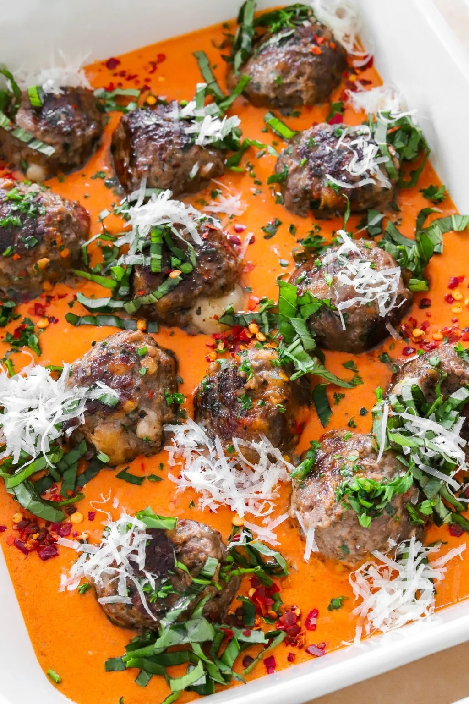
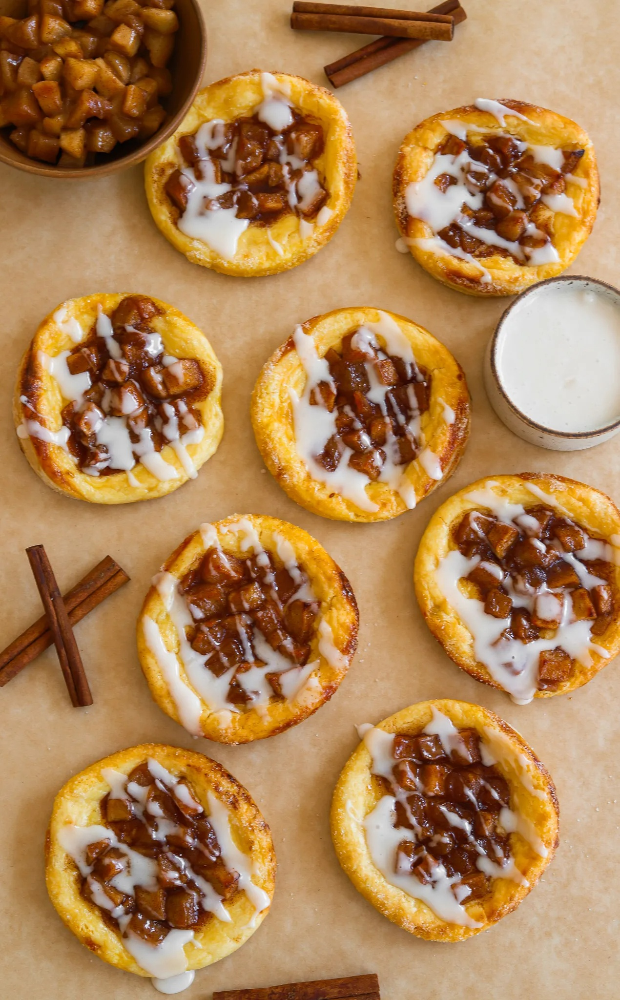
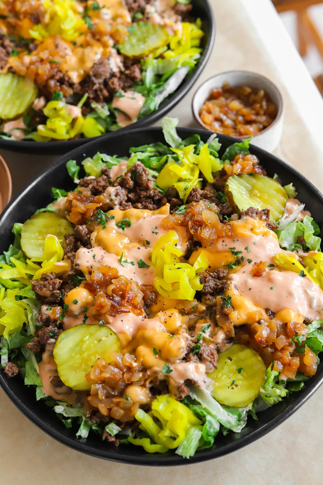

Prep Time: 15 minutes Cook Time: 30 minutes
Total Time: 45 minutes Yields: 5 to
The only thing better than meatballs is cheesy stuffed meatballs
that ooze out ooey gooey mozzarella with every bite! Paired with the
creamy “vodka” sauce, this recipe is packed with all sorts of
flavors and textures yet it all comes together in a little over 30
minutes. It is the definition of an indulgent dinner that can be
enjoyed with pasta or some garlic bread!
The only thing better than meatballs is cheesy stuffed meatballs that ooze out ooey gooey mozzarella with every bite! Paired with the creamy “vodka” sauce, this recipe is packed with all sorts of flavors and textures yet it all comes together in a little over 30 minutes. It is the definition of an indulgent dinner that can be enjoyed with pasta or some garlic bread!
Let’s start with the heart of the recipe which is the meatballs! I have been making meatballs this way for years now so when I promise you it is perfection, I mean it. It is packed with so much flavor and they always turn out so juicy. First things first, let’s gather our ingredients. In a small bowl, combine breadcrumbs and milk, letting them mingle for about 5 minutes until perfectly soaked. This mixture acts like a glue to hold the meatballs together. If you want these to be gluten-free, you can always skip this part.
Next, in a medium bowl, combine together ground beef, garlic, egg, parsley, Parmesan, and a flavorful array of spices that includes Italian seasoning, salt, black pepper, onion powder, paprika, and red pepper flakes. And now, for the shaping & cheese stuffing!
After combining the ingredients in the medium bowl, it’s time to get your hands dirty. You can use gloves if you prefer but I just do it with my hands as is. Take about 2 to 3 tablespoons of the meat mixture and gently roll it between your palms to form a round ball. Once you’ve got a nice round shape, press your thumb into the center to create a little indentation. Now, grab a cube of mozzarella and nestle it snugly into the indentation before sealing the meatball tightly around it. Repeat this process until all the meat mixture is used up. Feel free to experiment with the cheese you use! Since these are Italian-style meatballs, mozzarella does make the most sense but you can also use Monterey Jack. For a spicy version, use pepper jack!
If you want to ground turkey or chicken in place of the ground beef, that also works as well! Sometimes, I also love adding chopped sun-dried tomatoes and fresh basil to my meatballs for even more flavor, a little secret tip.
Now, let’s turn our attention to the star of the show – the luscious vodka sauce, or should I say no vodka-vodka sauce since this is an alcohol-free version. Heat up some olive oil in a saucepan over medium heat, then sauté garlic and tomato paste until they reach a rich, caramelized hue. For even more flavor, you can add in some oil from a sun-dried tomato jar which is what I did if you saw the recipe video on Instagram or TikTok. Pour in heavy cream and simmer until the sauce thickens to create a creamy consistency. Don’t forget to sprinkle in some parmesan, red pepper flakes, and dried basil for an extra kick.
If you tried this recipe and loved it, drop by down below and let me know how you liked it with a rating and comment! Feel free to also leave a question there about this recipe and I’ll get right back to it.
To see more recipes and behind the scenes, follow along on Instagram and Youtube! I’m also now on Pinterest pinning away so stop by and see what’s up.
Prep Time: 15 minutes Cook Time: 30 minutes
Total Time: 45 minutes Yields: 5 to
The only thing better than meatballs is cheesy stuffed meatballs
that ooze out ooey gooey mozzarella with every bite! Paired with the
creamy “vodka” sauce, this recipe is packed with all sorts of
flavors and textures yet it all comes together in a little over 30
minutes. It is the definition of an indulgent dinner that can be
enjoyed with pasta or some garlic bread!
Meatballs
Vodka Sauce
Prepping the Meatballs
Make the Vodka Sauce
Cook the Meatballs

